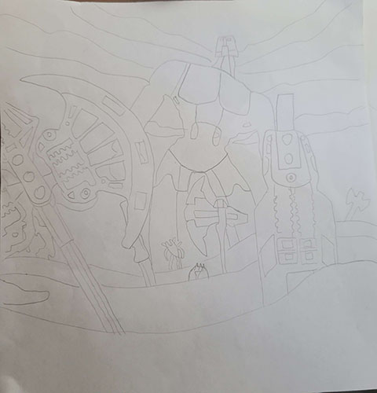
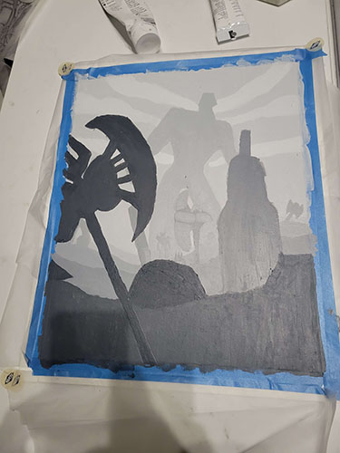

Robot Apocolypse
Fall 2022
Acryllic Paint on 11" x 17" poster board
Challenge Statement: Create a painting using acrylic paints in a grey scale that displays the qualities of atmospheric perspective
Solution Statement: As many students in our class painted with acrylics, it felt very intimidating, especially for me. I recall being concerned about how to translate the sketch for my design onto the canvas for painting. Luckily, our instructor showed us a technique for using tracing paper to transfer our design, which I used for translating my composition. The process for painting was a little scary since it was one of my first times painting, but by sticking to what the teacher suggested and giving it the time it needed, it turned out not too bad.
As this was my first time with acrylics, I wanted to keep my composition simple yet effective. So I decided the painting should feature a desert environment, with most of the detail coming from the items strewn about. Adhering to the rules of atmospheric perspective, I put all the detail into the items at the front, which leads to them dominating the composition. Some feedback I got was to add more details, which is fair since it was one of my first paintings. Despite its flaws, I was really proud of how it turned out!
